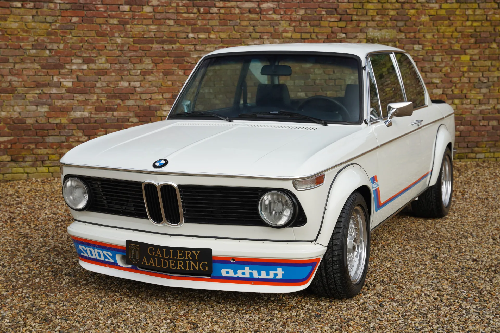
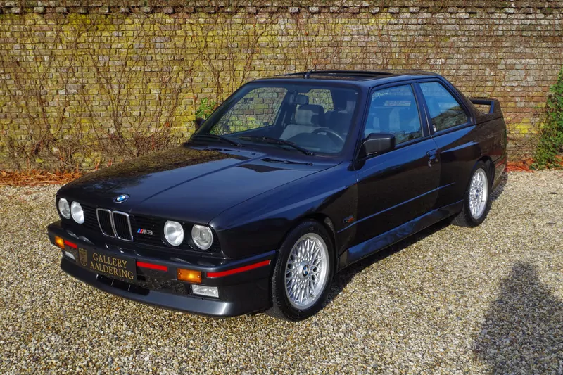

Legendarni modeli kroz godine
BMW ima dugu istoriju razvoja sportskih i luksuznih automobila koji su poznati širom svijeta po kvalitetu, performansama i dizajnu.BMW (Bayerische Motoren Werke) je njemačka kompanija koja je osnovana 1916. godine u Minhenu. Prvobitno se bavila proizvodnjom avionskih motora tokom Prvog svjetskog rata. Nakon rata, zbog zabrane proizvodnje aviona, prešla je na izradu motocikala, a kasnije i automobila. Prvi automobil BMW-a pojavio se 1928. godine i od tada kompanija postaje poznata po kvalitetu, sportskim performansama i inovacijama. Tokom 20. vijeka BMW je postao jedan od najpoznatijih pr oizvođača luksuznih automobila u svijetu. Danas BMW proizvodi širok asortiman vozila, uključujući limuzine, SUV modele i električne automobile. Poznat je po kombinaciji luksuza, tehnologije i sportskog dizajna. BMW je i dalje simbol njemačkog inženjeringa i visokog kvaliteta.

1982 - 1994
BMW E30 je jedna od najlegendarnijih serija 3, poznata po sportskom karakteru i pouzdanosti.

1968 - 1976
BMW 2002 je model koji je označio početak sportskih BMW limuzina.